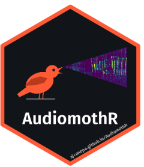

Checks what AudiomothR needs and what is installed
Source:R/utils.R
check_requirements.RdReports, for each requirement, whether it is available and how to install it otherwise: ffmpeg (required to convert audio and create videos), birdnetR (required; the first time it installs Python and the BirdNET model) and, for the PDF report, Quarto (1.4 or later), knitr and rmarkdown, and the map packages (maptiles, sf and terra). It also shows the language that will be used for the common names of the species.
Details
knitr and rmarkdown are not only looked for but loaded: an old version of one of the packages they use (often htmltools, after updating RStudio or rmarkdown) prevents loading them, and then neither the report nor the vignettes can be built. The message of R says which package must be updated.
Examples
check_requirements()
#>
#> ── AudiomothR requirements ──
#>
#> ✔ ffmpeg: /usr/bin/ffmpeg
#> ✔ birdnetR 0.3.2 (the first time it installs Python and the BirdNET model)
#> ✔ Quarto 1.11.9 (PDF report): /usr/local/bin/quarto
#> ✔ knitr 1.52 and rmarkdown 2.32 (PDF report and vignettes)
#> ✔ maptiles, sf and terra (report map on OpenStreetMap)
#> ℹ Language of the common names (from the system locale): "en_us". Change it
#> with the `language` argument of `analyze_birdnet()`.